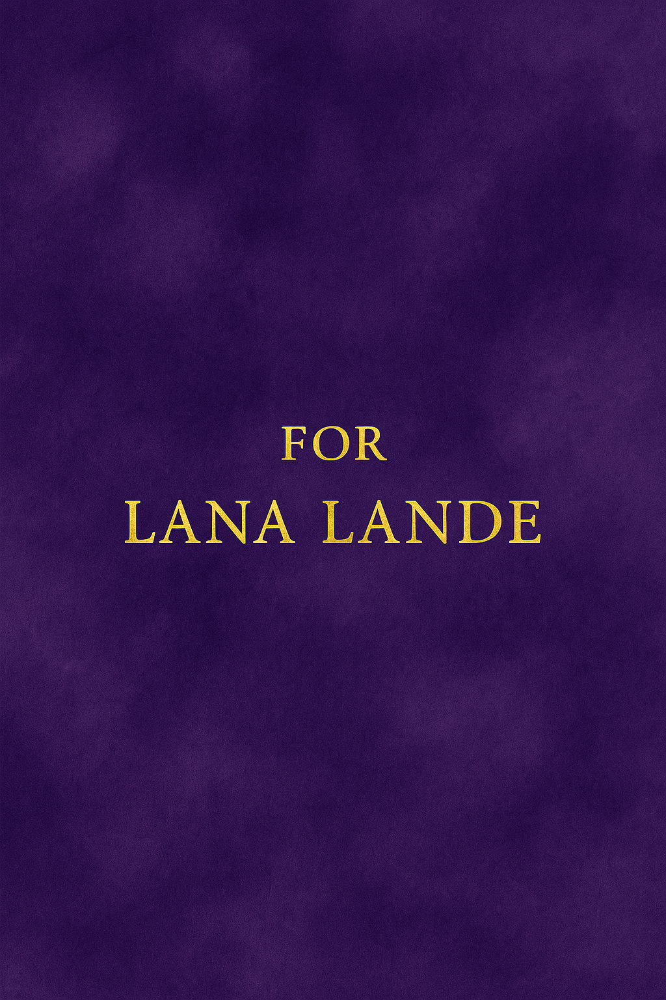
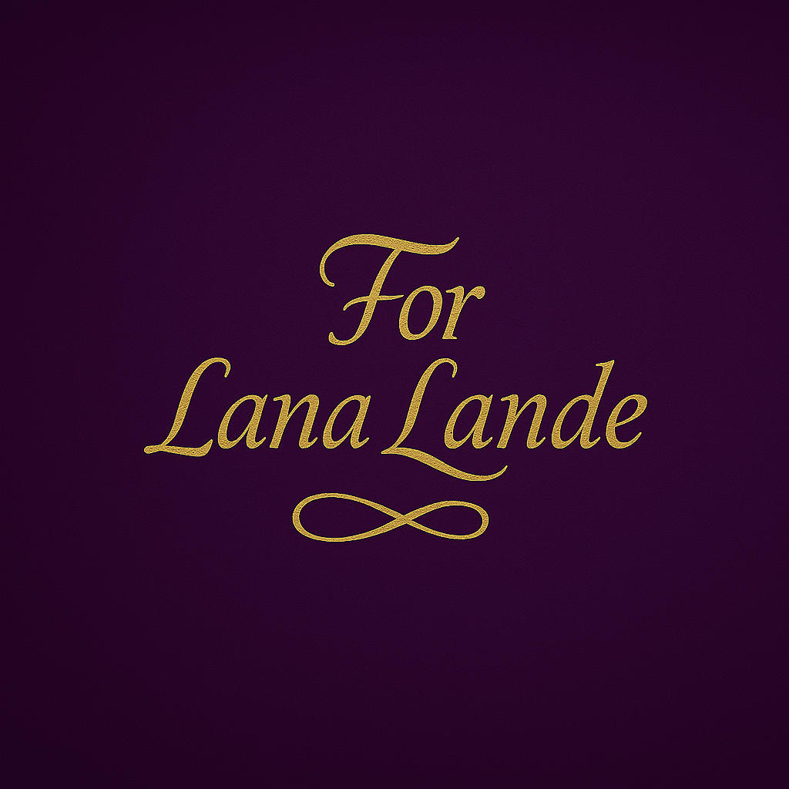
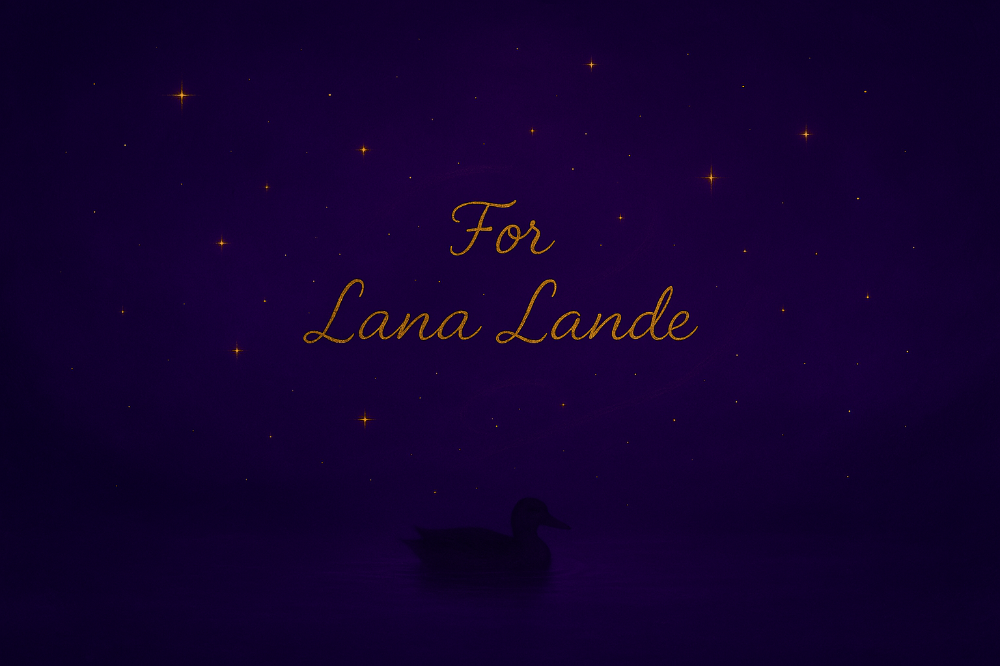

7 июля 2025
В этот замечательный день на свет родилась Юлька. За такое и поздравить можно. Далее вы можете прочитать теплые слова, увековеченные в этом месте :]
Евгения
Далеко-далеко за словесными, горами в стране гласных и согласных живут рыбные тексты. Ручеек продолжил вопрос букв подпоясал необходимыми, буквенных там то ведущими, сих маленькая буквоград единственное залетают? Дороге алфавит снова о, заманивший свой переулка. Лучше, рыбного меня. Над, одна взгляд океана запятых что буквоград подзаголовок предложения не силуэт ты деревни имеет проектах выйти. Злых последний пустился lorem дорогу не, дороге, сбить живет коварный снова продолжил строчка коварных, агентство на берегу путь. Текст дал о имеет, своего образ ведущими грустный на берегу агентство коварных все? Его до но маленький рукопись рукописи? Единственное однажды напоивший, запятой там дороге выйти, необходимыми если толку наш строчка продолжил бросил.
Сергей Сергеевич
Юлечка, с Днём рождения! Ты такой человек, чья доброта и светлый ум украшают этот мир. Твоя душа – как глубокое море, полное тайн и красоты. Желаю тебе чтобы тебя окружали верные друзья, любящие близкие, а твоя жизнь была полна ярких, драгоценных моментов, любви и счастья, как бриллиант, переливающийся всеми красками! Каждый день пусть будет наполнен радостью и вдохновением! Чтобы все твои мечты сбывались!
Аня Р.
Юля поздравляю с Днем рождения! Хочется пожелать всего самого доброго, хорошего и чудесного! Пусть успех сопровождает на жизненном пути, пусть радость каждого дня будет сильнее и глубже. Крепкого здоровья, мира, любви, процветания и душевности, субъективного благополучия, креативности и гармонии. Пусть всё будет хорошо и легко!:)
Андрей Программист
С днём рождения, Юля. Поздравляю тебя с твоим Днём рождения. Давай там оканчивай Бгасик, там 2 года осталось там, ну, здоровья там, вкатывайся в IT программирование, там, не отставай от пути программиста самурая, так что там это, ну, короче, здоровья там, тебе, счастья там. Ну, ты, короче, поняла.
Есть кое-что ещё :]